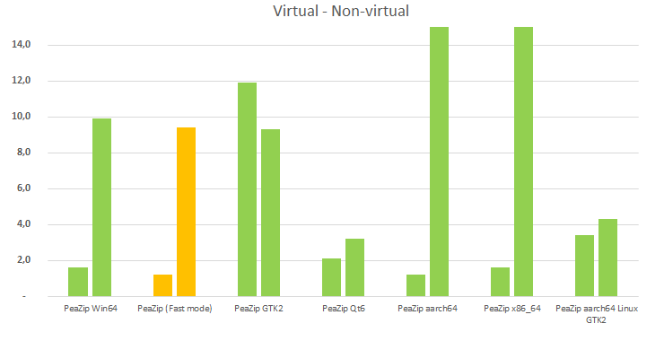

|
Goals
- Compare mainstream archive managers, on
multiple Operating Systems, in terms of times needed to open archives
containing a very large number of files and folders (in the range of
several thousands).
- Identify factors that may influence
archive browsing performances when listing thousands of items is
required.
|
Software
settings
- Windows 10 64 bit using 64 bit versions
of:
- 7-Zip 22.01
- PeaZip 8.9.0
- WinRar 6.11
- Windows 10 built-in Compressed Folders
- Linux Mint 21 x86_64
- PeaZip for Linux GTK2 8.9.0
- PeaZip for Linux Qt5 8.9.0
- Gnome Archive Manager
- macOS 12
- PeaZip for macOS aarch64 8.9.0
All applications are tested using default,
out-of-the-box configuration unless specified otherwise.
|
|
|
Hardware
settings
Windows: Notebook with Intel Core i7-8565U CPU, 4
physical cores with hyper-threading (8 logical cores), 8 GB RAM
System disk 512 GB PCIe NVMe SSD, NTFS filesystem.
7-Zip benchmark score 24000
Linux: virtual machine over previous hardware.
7-Zip benchmark score 10000
macOS: 2020 MacBook Air with M1 chip.
7-Zip benchmark score 45000
Since very different technologies are employed, 7-Zip benchmark score
is provided as reference, albeit it is mainly correlated with CPU
performances.
|
Input data
Subject of the benchmark are 3 archives in ZIP
format,
default compression level, no encryption, containing several small
files of mixed types - in the range of 10s of thousands and 100s of
thousands items.
As content for the ZIP archives it was provided, multiple times, a
directory containing:
1x PeaZip source package
3x PeaZip translations package
totaling about 1000 items, approximately 93% files and 7% directories.
Archive "25K" contains 25 K items, 225 MB in size
Archive "250K" contains 250 K items, 2.25 GB in size
Archive "25-flat" contains 25 K items, all of them in the root of the
archive, 225 MB
in size
|
|
|
Benchmark methods
Benchmark
input archives are saved in a fast SSD system disk, and opened by the
tested applications - which are already started.
A median time in seconds over 3 tests is reported as time to open the
archive for browsing.
Since the tests took place on different machines for Windows, Linux,
and macOS systems, 7-Zip benchmark score (rounded) is reported for
reference in "Hardware settings" paragraph.
Caveats
- Archives were purposely tested on a fast local SSD
drive to put the focus of the benchmark on the efficiency of the tested
utilities: a slow disk or, worse, a remote disk over a slow connection,
will degrade the performances of all applications, adding overhead
time to access the data, the overhead being correlated with the size of
the archive and the speed of the unit.
- External factors may alter the outcome of the test,
i.e. the system could theoretically delay or stop content listing
operations detecting
high CPU / memory usage, or high temperature, or an anti-malware
software may interfere with the operations,
Benchmark listing times
results
(the lower the better)
|
25K
|
250K
|
25K-flat
|
PeaZip
WIN64
|
2.3
|
6.0 |
9.8
|
PeaZip
WIN64 (do not pre parse)
|
0.7
|
1.3
|
9,2
|
7-Zip
|
0.6
|
0.7
|
0.6
|
WinRar
|
0.7
|
3.3
|
5.7
|
MS
Compressed Folders
|
1.5
|
not
completed in 3 minutes
|
6.0
|
PeaZip for
Linux GTK2
|
2.2
|
5.6
|
9.3
|
PeaZip for
Linux Qt5
|
2.1
|
5.6
|
3.8
|
Gnome
Archive Manager
|
1.2
|
5.0
|
1.7
|
PeaZip for
macOS aarch64
|
1.1
|
4.1
|
36.0
|
PeaZip for
macOS x86_64
|
1.6
|
5.5
|
59.0
|
Performances opening archives containing an increasingly large number
of items
While up to
a few thousands items per archive the time needed to open the archive
is
barely noticeable, for any of the tested apps, on a modern machine,
with the 25K and 250K items benchmarks it become evident how well each
application scales in efficiency for listing an increasingly larger
number of items.
All applications (excluding 7-Zip) took a significant performance hit
increasing items per archive from 10s of thousands up to 100s of
thousands items per archive, with MS Compressed Folders being unable to
complete the 250K test in under 3 minutes (and was consequently
stopped).
With out-of-the-box configuration, PeaZip shows a performance trend
similar to WinRar and Gnome Archive manager in handling increasingly
larger archives, but it is slower than both apps and of 7-Zip, which is
the fastest tested application.
With pre-parsing option turned off, PeaZip becomes almost as fast as
7-Zip in both 25K and 250K tests, significantly faster than other
tested apps.
PeaZip performs a comprehensive pre-parsing
of the archive on opening, listing the entire archive content, not
only the root, which clearly adds a penalty in terms of raw
performances, but as tradeoff it is meant to warn the user of possible
integrity issues in advance, to display useful stats about the archive,
and
to create a treeview representation of the structure of directories
inside
the archive to help browsing.
PeaZip can automatically turn off parts of pre-parsing process in order
to preserve performances, and can completely skip pre-browsing: this
behavior can be set in Options > Settings, Browser optimization in
Performance group.

Performances rendering a
large number of items in the archive browser
25K-flat test shows mainly the efficiency in displaying a
large number of items at once in the file / archive manager component.
In this test the best possible advantage is the implementation of a virtual list
view, which is probably the key factor in 7-Zip and Gnome
Archive Manager performances for
25K-flat being
almost identical to 25K case, unlike other applications including
PeaZip, which lacks this mechanism.
Swithcing off pre-parsing does not improve PeaZip's speed much in this
test, as the rendering part is unaffected.
The second most important key factor in this test is the efficieny of
the underlying
Operating System's widget set
in rendering the list view items.
This
become evident with PeaZip, which uses different widget sets on
Windows,
Linux, and macOS, with the Linux versions being significantly faster
than Windows and macOS ones - despising
the Linux test machine being by far the slowest one
accordingly to the
7-Zip benchmark ratings.
On Linux, Qt5 widget set significantly outperforms GTK2 and provides a
surprisingly good result, as faster application not implementing a
virtual treeview.
On macOS, the rendering times were noticeably slower than on Linux and
Windows, either because Lazarus (the IDE using to build PeaZip) is
less mature on this platform or because of performances of Cocoa widget
set functions involved.

7-Zip is the fastest application to open / browse large archives in all
tests.
Out-of-the-box, PeaZip is slower than better optimized apps as WinRar
and Gnome Archive Manager, due to a time-consuming full archive
pre-parsing stage meant to detect issues and provide information about
the archive.
However, its shows a comparable capability in scaling performances for
opening in reasonable times archives in the range of 10s thousands to
100s thousands of items.
PeaZip with pre-parsing disabled is almost as fast as 7-Zip, and
significantly faster than any other tested apps, unless it is needed to
display many thousands of items at once - lacking a virtual list view
implementation it is inherently limited by the efficiency of
the underlying OS widget set.
As for system utilities, Gnome Archive Manager clearly surpasses MS
Compressed Folders, and it is even faster than PeaZip for Linux.
On an M1 Apple Silicon machine, the native macOS aarch64 build
consistently performed better than the x86_64 build, ranging from 25%
to 40% faster performances.
Synopsis: Open large archives
benchmark. What is the fastest application to open large archives?
Comparison of archive browsing speed with 7-Zip, PeaZip, and WinRar.
Archive listing benchmark methods, time to open results, comparative of
speed of archive manager utilities for browsing archives containing
thousands of files and folders.
Topics: PeaZip vs 7-Zip vs
WinRar list large archive content benchmark, which is the fastest
application
PeaZip > Compression
benchmark > Open large archives benchmark
|
|